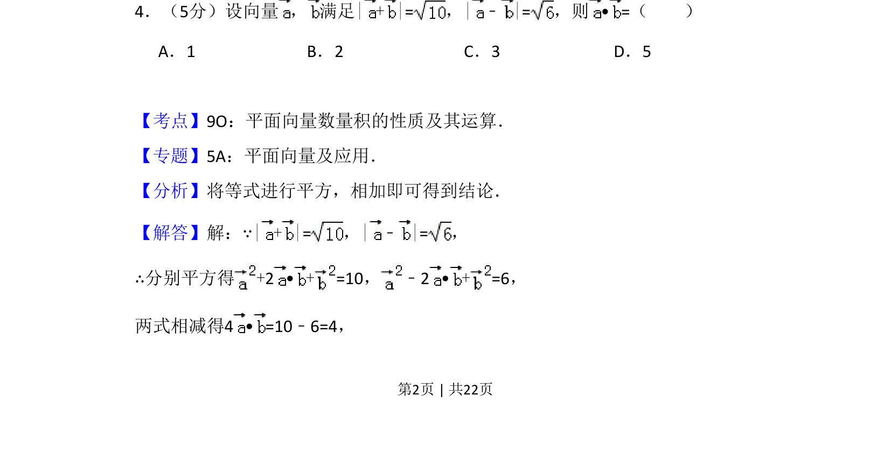
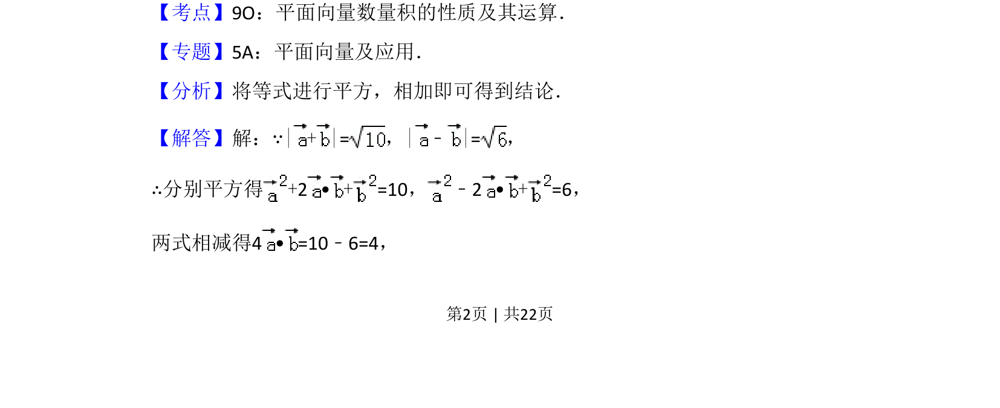
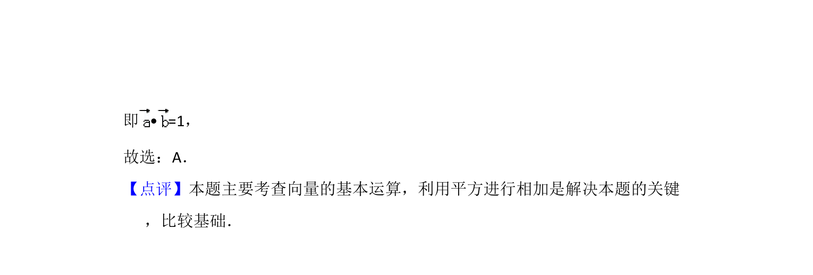

考点：平面向量数量积的性质及其运算

通过向量和与差的模长平方运算求数量积


📄 原 PDF 第 2 页：
素材/真题/吉林/2008-2024·（吉林）数学高考真题/2014年高考数学试卷（文）（新课标Ⅱ）（解析卷）.pdf
4．（5分）设向量 ， 满足| + |=，|﹣|=，则• =（ ） A．1 B．2 C．3 D．5
【考点】9O：平面向量数量积的性质及其运算．菁优网版权所有 【专题】5A：平面向量及应用． 【分析】将等式进行平方，相加即可得到结论． 【解答】解：∵| + |=，|﹣|=， ∴分别平方得+2 •+=10， ﹣2 •+=6， 两式相减得4 • =10﹣6=4，